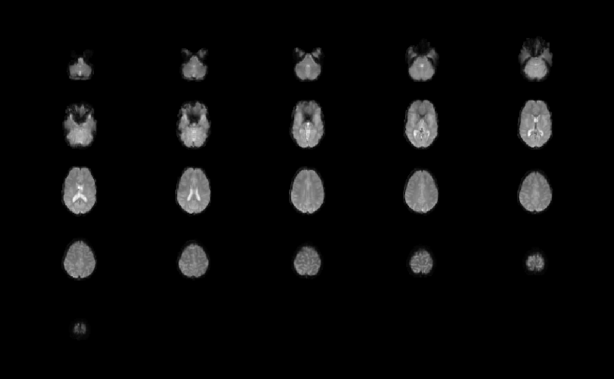

These functions read in the header information and multidimensional array
from a binary file in NIfTI-1 format into a nifti-class
object.
readNIfTI(
fname,
verbose = FALSE,
warn = -1,
reorient = TRUE,
call = NULL,
read_data = TRUE,
rescale_data = TRUE
)
nifti_header(fname, verbose = FALSE, warn = -1)is the file name of the NIfTI file(s).
is a logical variable (default = FALSE) that allows
text-based feedback during execution of the function.
is a number to regulate the display of warnings (default = -1).
See options for more details.
is a logical variable (default = TRUE) that enforces
Qform/Sform transformations.
keeps track of the current function call for use in the NIfTI extension.
Should the data be read in? If this is FALSE, then an array of NAs are given instead of the true data. Useful if you are simply interested in the header.
Should the data be rescaled using the slope and intercept values? If so, slope and intercept will be reset
An object of class nifti.
The readNIfTI function utilizes internal methods readBin and
readChar to efficiently extract information from the binary file(s).
Current acceptable data types include
BINARY (1 bit per voxel)
SIGNED SHORT (16 bits per voxel)
SINGED INT (32 bits per voxel)
FLOAT (32 bits per voxel)
DOUBLE (64 bits per voxel)
UNSIGNED SHORT (16 bits per voxel)
UNSIGNED INT (32 bits per voxel)
NIfTI-1
http://nifti.nimh.nih.gov/
if (FALSE) { # \dontrun{
url <- "http://nifti.nimh.nih.gov/nifti-1/data/filtered_func_data.nii.gz"
urlfile <- file.path(system.file("nifti", package="oro.nifti"),
"filtered_func_data")
download.file(url, urlfile, quiet=TRUE)
} # }
## The NIfTI file provided here contains the first 18 volumes (10%)
## of the original data set
urlfile <- file.path(system.file("nifti", package="oro.nifti"),
"filtered_func_data")
(ffd <- readNIfTI(urlfile))
#> NIfTI-1 format
#> Type : niftiExtension
#> Data Type : 4 (INT16)
#> Bits per Pixel : 16
#> Slice Code : 0 (Unknown)
#> Intent Code : 0 (None)
#> Qform Code : 0 (Unknown)
#> Sform Code : 0 (Unknown)
#> Dimension : 64 x 64 x 21 x 64
#> Pixel Dimension : 1 x 1 x 1 x 1
#> Voxel Units : Unknown
#> Time Units : Unknown
image(ffd, oma=rep(2,4))

orthographic(ffd, oma=rep(2,4))
if (FALSE) { # \dontrun{
## 27 scans of Colin Holmes (MNI) brain co-registered and averaged
## NIfTI two-file format
URL <- "http://imaging.mrc-cbu.cam.ac.uk/downloads/Colin/colin_1mm.tgz"
urlfile <- file.path(tempdir(), "colin_1mm.tgz")
download.file(URL, dest=urlfile, quiet=TRUE)
untar(urlfile, exdir=tempdir())
colin <- readNIfTI(file.path(tempdir(), "colin_1mm"))
image(colin, oma=rep(2,4))
orthographic(colin, oma=rep(2,4))
} # }